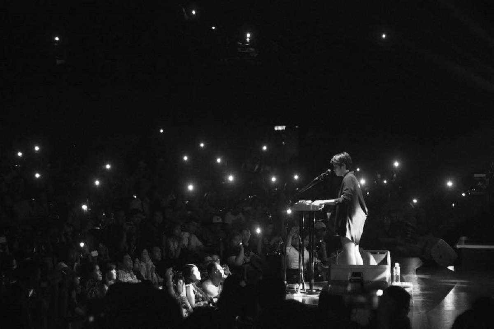
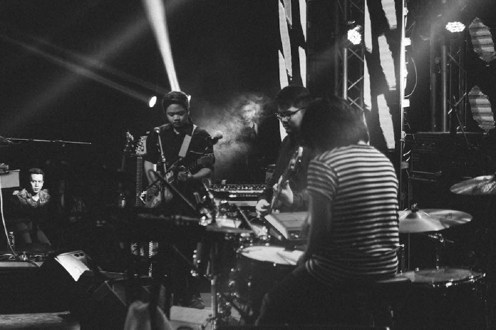
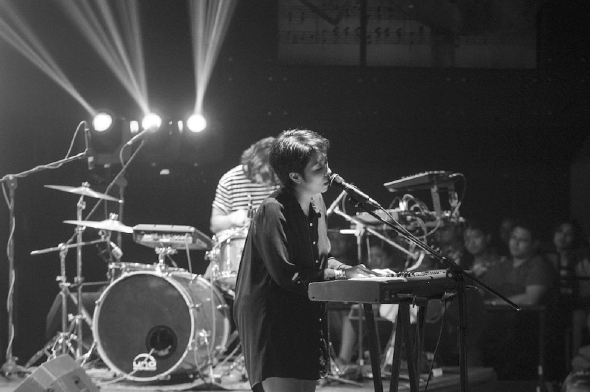

You can just call them UDD for short
By: Kara Bodegon | July 14, 2016
Carlos Tañada has been working hard, and with the storm raging outside his window, it looks like he’ll have to kick back for the day. The recording session for the new Up Dharma Down album at bassist Paul Yap’s house has been postponed, and between trail biking in the rain or finishing Uncharted 4 on PlayStation, Tañada settles for the latter in his bedroom. There has been a lot of progress on their fourth studio album UDD, so a little me-time is called for. Armi Millare is in the studio recording vocals, three of Ean Mayor’s drum tracks are on file—it’s now up to Tañada and Yap to fill the songs with rhythm. And this time around, there’s nothing but groove popping in Tañada’s head.
Up Dharma Down have been around for over ten years, and releasing a self-titled album has finally come to the table. According to Tañada, they also want to establish more to people that they can call the band “UDD” for short. “It gets tiring to explain,” Mayor admits. “Some events just can’t get the name right. It’s Up Dharma Down—not U.P. Dharma Down, Updharma Down, or Up Dharma. So we’re looking at repacking and rebranding the band to just UDD.”
Known for using layers of sound texture melodies and ambience in past albums, the electronic rock quartet are looking toward a funkier direction with UDD, “which brings me to the music I’ve been listening to the past three years—Prince, Junior, and D’Sound,” says Tañada, who will also be playing bass for a couple of songs, while Yap holds down the synths. They’re going for a minimal approach, Mayor explains, “With Capacities, medyong na-excite kami sa use ng synthesizers. This album will sound more ‘70s.” And in terms of their infamous amounts of lyrical hugot, Yap teases that their self-titled album will deal more on fear and regret.
Since late last year, Up Dharma Down have been slipping songs from the new album at their shows. Reception for “Tambalan” (originally “Tayong Dalawa”) and “Sigurado” have already proven that UDD will surely strike fans loyal to the band since 2006’s Fragmented and casual listeners who found love for them with “Oo” and the 2014 hit “Tadhana.” Over the past four years since the release of the critically acclaimed Capacities, the tech-savvy group invested on a V-Drums kit, which Mayor is using to electronically track drums from home. Tañada too geared up with a Fractal Audio Axe-Fx amp simulator for guitar and bass, and once a week, would meet up with the rest of the group at Millare’s home studio since she has the room that can accommodate all four of them. “And she can cook,” Tañada adds. “Sometimes it’s healthy food that tastes healthy, sometimes it’s pizza.”
Where they are exactly in the recording process, the band isn’t quite sure. With all the right gear they have at home, they found no need to book a studio, except for recording Millare’s vocals, which are being engineered by Aaron Gonzales at Point Bee Multimedia in Quezon City. They look at the possibility of re-releasing their collaboration with the Singapore Tourism Board, the stand-alone single “All the Good Things,” but a different version of the upbeat track. Simultaneously, Tañada isn’t completely satisfied with “Tambalan” yet. “It’s still in the middle of a face lift,” he says.
All while recording their self-titled album, Up Dharma Down are preparing to accompany the 1924 German classic The Last Laugh (Der Letzte Mann) live at the 10th Anniversary of the International Silent Film Festival on August 28 at the Shangri-la Plaza Mall Complex. Saying that they’ve been working hard now appears to be an understatement. With everything that’s been going on in their lives, Up Dharma Down stand together with pride, as they continue to break creative boundaries and evolve with the Filipino soundscape.